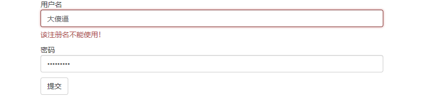

原文出处:本文由博客园博主我是渣渣聪提供。
原文连接:https://www.cnblogs.com/missdx/p/11387997.html
原文连接:https://www.cnblogs.com/missdx/p/11387997.html
1.form组件的介绍
在之前的开发过程中，我们都会用一种最传统的方式写form表单。我们以注册为例子，分别讲解传统方式和用form组件的区别。
传统方式：
首先创建一个注册页面，页面里面有form表单。
然后form表单能够将数据提交到后端，并且后端对数据进行有效性校验。
最后把校验的提示展示到页面上，方便使用者查看。
form组件的方式：
1.可以自动生成html代码
2.能够进行数据有效性校验
3.校验信息并展示出来，同时会将原来的数据保存
注：前端和后端都可以对数据进行校验。前端通过JS进行校验，开发时，最好前端设置校验，后端必须写一个校验，因为前端的校验可以被跳过。
2.form组件的使用
在这里我直接给出例子，以展示如何使用form组件。


from django.shortcuts import render
from django import forms
from django.forms import widgets
# 定义一个form组件的类
class RegForm(forms.Form):
name = forms.CharField(
max_length=16,
label='用户名',
# widgets是Django对HTML输入元素的表示,后面的attrs能够设置样式
widget=widgets.TextInput(attrs={'class':'form-control'}),
error_messages={
'max_length':'用户名长度不能超过16'
}
)
pwd = forms.CharField(
min_length=6,
label='密码',
error_messages={
'min_length':'密码不可少于6位'
},
# 当密码校验出错时，render_value=True可以将错误的密码填回去，不让他消失
widget=widgets.PasswordInput(attrs={'class':'form-control'},render_value=True)
)
def reg(request):
# 使用这个类
forms_obj = RegForm()
if request.method == 'POST':
# 获取页面上传来的信息
forms_obj = RegForm(request.POST)
# 如果信息校验通过，则不处理，如果不通过，就把错误信息继续传到页面上
if forms_obj.is_valid:
pass
return render(request,'forms.html',{'forms':forms_obj})<!DOCTYPE html>
<html lang="en">
<head>
<meta charset="UTF-8">
<title>表单</title>
<link rel="stylesheet" href="/static/bootstrap-3.3.7-dist/css/bootstrap.min.css">
</head>
<body>
<div class=".container">
<div class="row">
<div class="col-md-6 col-md-offset-3">
{# novalidate表示不用浏览器自带的校验检查#}
<form action="/reg/" method="post" novalidate>
{% csrf_token %}
<div class=".form-control">
{{ forms.name.label }}{#显示label标签#}
{{ forms.name }}{#显示label标签后面的框#}
{# 用来放置错误信息，为什么是error.0，这是因为错误信息里面可以放置多条，.0代表取第一条#}
<span class="help-block">{{ forms.name.errors.0 }}</span>
</div>
{# {% if forms.pwd.errors %}has-error{% endif %}表示当有错误时，让input框变红#}
<div class=".form-control {% if forms.pwd.errors %}has-error{% endif %}">
{{ forms.pwd.label }}
{{ forms.pwd }}
<span class="help-block">{{ forms.pwd.errors }}</span>
</div>
<div class=".form-control">
<input class="btn btn-default" type="submit" value="提交">
</div>
</form>
</div>
</div>
</div>
</body>
</html>STATICFILES_DIRS = [
os.path.join(BASE_DIR,'static')
]path('reg/', views.reg),注：
forms_obj = RegForm(request.POST)
print(forms_obj.cleaned_data)
#所有通过校验的数据都以字典的形式保存在cleaned_data中
效果图：
3.自定义校验
往往别人为设置好的校验规则都不能满足我们所有的需求，这个时候我们需要自己写一个校验。比如若用户注册时，填写的注册名有骂人的词语时，那我们就要提示他“该注册名不能”，该怎么做呢？我们只需要在RegForm类里面加一个函数即可，RegForm类见上面的vies.py。
from django.core.exceptions import ValidationError
class RegForm(forms.Form):
...
def clean_name(self):
value = self.cleaned_data.get('name')
if '大傻逼' in value:
raise ValidationError('该注册名不能使用！')
return value效果图：

在上面的代码中，我只给出来用户名和密码，没有给出确认密码，现在我加上确认密码，并且加上验证两次密码是否一致，该怎么写呢？
class RegForm(forms.Form):
...
def clean(self):
pwd = self.cleaned_data.get('pwd')
re_pwd = self.cleaned_data.get('re_pwd')
if pwd != re_pwd:
self.add_error('re_pwd',ValidationError('两次密码填写不一致！'))
raise ValidationError('两次密码填写不一致！')
return self.cleaned_data只需要加上这一步即可，其他的代码自己完善一下。
3.推荐博文
https://www.cnblogs.com/liwenzhou/p/8747872.html